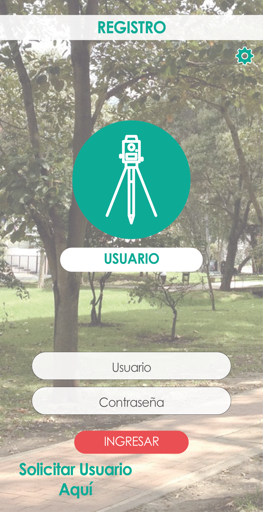

<ion-content class="background-image">

  <ion-card>
  
    <button class="user">Usuario</button>
    <button class="password">Contraseña</button>
    <button class="preconsult" (click)=preconsult()>INGRESAR</button>
    <button class="atras" (click)=login()>Atras</button>
     
  </ion-card>

</ion-content>  